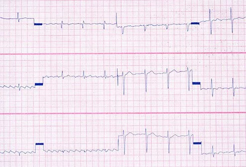

Home
Sign And Symptoms
What is diabetes? What are the types of diabetes?
Diabetes is a metabolic disorder that occurs when your blood sugar (glucose), is too high (hyperglycemia). Glucose is what the body uses for energy, and the pancreas produces a hormone called insulin that helps convert the glucose from the food you eat into energy. When the body either does not produce enough insulin, does not produce any at all, or your body becomes resistant to the insulin, the glucose does not reach your cells to be used for energy. This results in the health condition termed diabetes.
There are two main types of diabetes, type 1 and type 2.
- Type 1 diabetes, formerly called juvenile diabetes, because it usually is diagnosed during childhood. Type 1 diabetes is an autoimmune condition in which the body does not produce insulin because the body’s immune system attacks insulin-producing cells from the pancreas called beta cells. Type 1 diabetes is treated by using insulin.
- Type 2 diabetes is a condition in which cells cannot use blood sugar (glucose) efficiently for energy. This occurs when blood sugar levels get too high over time, and the cells become insensitive or resistant to insulin (termed insulin resistance). There are multiple medications used to treat type 2 diabetes.
What warning signs and symptoms of diabetes are the same in men and women?
There are diabetes warning signs and symptoms that both women and men have in common, for example:
- Excessive thirst and hunger
- Frequent urination (from urinary tract infections or kidney problems)
- Weight loss or gain
- Fatigue
- Irritability
- Blurred vision
- Slow-healing wounds
- Nausea
- Skin infections
- Darkening of skin in areas of body creases (acanthosis nigricans)
- Breath odor that is fruity, sweet, or an acetone odor
- Tingling or numbness in the hands or feet
What is prediabetes (pre-diabetes)?
Prediabetes is a condition in which blood glucose levels are higher than normal, but a person does not yet have diabetes. Prediabetes and high blood glucose levels are a risk factor for developing diabetes, heart disease, and other health problems. Other warning signs prediabetes may include increased urination, feeling you need to urinate more often, and/or increased thirst.
What warning signs and symptoms of diabetes are unique to men?
Signs and symptoms of diabetes unique to men include:
- Erectile dysfunction (ED, impotence)
- Retrograde ejaculation
- Low testosterone (low-T)
- Decreased sex drive (decreased libido) and sexual dysfunction
What are risk factors for diabetes in men?
Gender is a risk factor for diabetes, and men are at higher risk for developing type 2 diabetes than women.
Other risk factors for developing diabetes for both men and women include:
- Family history: first degree relative with diabetes
- Ethnicity: increased risk for Asians, Hispanics, and African Americans
- Obesity
- Fat distribution: more fat around the middle
- High blood pressure
- High cholesterol
- Sedentary lifestyle (lack of exercise and/or not physically active)
- Smoking
- Excess alcohol intake
- Lack of sleep
- Low testosterone in men
Is there a test to diagnose type 1 and type 2 diabetes?
Your doctor or other healthcare provider will order urine and blood tests find out if you have diabetes. There are several different types of blood tests used to diagnose diabetes.
- Fasting blood sugar test: After fasting for 12-hours a glucose level is checked in your blood. If it is high, it is indicative of diabetes.
- Hemoglobin A1C test: This test tells your doctor how your average blood glucose level has been over the past 2-3 months.
- Normal ranges for HbA1c are between 4% and 5.6%.
- HbA1c levels that range from 5.7% to 6.4% indicates increased risk of diabetes.
- HbA1c levels higher than 6.5% indicate diabetes, while higher percentages indicate either worsening diabetic disease or poor response to diabetic treatments.
- Random blood sugar test: This is a test of your blood sugar at the moment your blood is drawn, but this number can vary greatly based on when you last ate.
- Oral glucose tolerance test: This test is rarely used in men, but it measures your body’s response to a large amount of glucose.
Diabetes: How Blood Sugar Levels Affect Your Body
High: Makes You Pee More
Your kidneys have to work hard to process all that extra sugar in your blood. When they can't keep up, your body gets rid of it, along with water that your body needs.
High: Makes You Thirsty
To get rid of that extra sugar, your body draws water from its own tissues. Because you need that fluid to make energy, transfer nutrients, and get rid of waste, a switch flips in your brain to tell you that you're thirsty so you'll drink more.
High: Dry Mouth
Your mouth could get dry and cracked at the corners as your body draws fluid from it. Less saliva and more sugar in your blood make infection more likely. Your gums might swell, and white patches can grow on your tongue and inside your cheeks (your doctor will call this oral thrush). It can help to drink more water or chew sugar-free gum.
High: Skin Problems
Your body takes water from all over to get rid of extra blood sugar. That may cause dry, itchy, cracked, skin, especially on your legs, elbows, feet, and hands. In time, high glucose levels also can damage nerves. This is called diabetic neuropathy. It can make it harder for you to feel cuts, wounds, or infections. Without treatment, they can become bigger problems, like the loss of a toe, foot, or part of your leg.

High: Vision Problems
Your body may pull fluid from the lenses in your eyes, which makes it harder to focus. And high blood sugar can damage blood vessels on the back part of your eye (retina). That can cause long-term vision loss and even blindness.
High: Fatigue
When you have type 2 diabetes and your blood sugar is high too often, you become less sensitive to insulin, which helps move energy to your cells. A lack of fuel can make you tired. You can have the same fatigue with type 1 diabetes, because your body can't make its own insulin. If you don't treat it correctly, your levels can stay high all the time. Your doctor can help by prescribing medication and suggesting lifestyle changes you can make.

Low: Fatigue
If you have diabetes, insulin is one way to lower your blood sugar when it gets high. But if you take too much, it might remove so much glucose so quickly that your body can't replace it fast enough. That leaves you tired. Other illnesses and drugs also may also upset this cycle and empty your tank.
High: Digestive Problems
If your blood sugar is high for too long, it can damage the vagus nerve, which helps move food through your stomach and intestines. You may lose weight because you aren't as hungry. You might have trouble with acid reflux, cramps, vomiting, and severe constipation.
Low: Weird Heartbeat
The hormones that help raise your blood sugar when it's too low can also spike your heart rate and make it feel like it skips a beat. (Your doctor will call this arrhythmia.) The drop in glucose most often happens as a side effect of drugs used to treat diabetes.
Low: Shakiness
Low glucose can unsettle your central nervous system, which controls how you move. When that happens, your body releases hormones, like adrenaline, to help bring your levels back up. But those same substances also may make your hands and other parts shake or tremble.

Low: Sweaty
The hormones your body releases to raise your blood sugar when it gets too low also make you sweat a lot. It's often one of the first things you notice when your glucose levels fall too far. Your doctor can help you track your levels and try to keep them in a healthy range with medication, exercise, and eating habits.
Low: Hungry
Sudden, intense hunger, even after you've eaten, may be a sign that your body doesn't convert food to blood sugar in the right way. Illness or certain drugs can cause it, too. If you have diabetes, your doctor might be able to adjust your medication, which is often the source of the problem.
Low: Nausea
Actually, it isn't low blood sugar by itself. When your levels get either very high or very low, it can cause a rebound effect. Your blood sugar bounces from one extreme to the other, confuses your body's digestive system, and makes you feel sick to your stomach.
Low: Dizziness
Your brain cells need glucose to work properly. When they don't have enough, you may start to feel tired, weak, and dizzy. You also might have a headache.
Low: Confusion
When your blood sugar gets really low (hypoglycemia), you start to lose your bearings. You may slur your speech or forget where you are. Sometimes it happens so suddenly that you might not even realize you're acting strangely. In serious cases, you could have a seizure or fall into a coma.